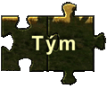

Informace (Podrobnosti, Nezbytnosti...)
| Kdy: | 17.7. - 25.7. 2010 |
| Kde: | pomezí Rychlebských hor a Jeseníků |
| Pro: | 24 mladých lidí |
| Věk: | 18+ |
| Za kolik: | Cena 3000 Kč |
Co je v ceně
V ceně je zahrnuto ubytování , stravování a náklady na materiál potřebný pro přípravu a pořádání programů. V ceně není zahrnuto jízdné na akci a zpět.
Ubytování
Útočiště nám poskytne turistická chata se spaním ve vlastním spacáku na postelích a s teplými sprchami. A občas možná i okolní kopce s měkkou trávou na svazích a rosou po ránu.
Stravování
Jídla bude dost a to i několikrát denně . Naše kuchařky budou zajišťovat jídlo i pro vegetariány. Na speciálních diatách je nutno se domluvit jednotlivě a dopředu.
Program
Na zážitkové akci je různě strukturovaným programem vyplněn téměř celý den. Program se skládá z různorodých aktivit od sportovních až po tvořivé a sebepoznávací, od jednoduchých hříček až po komplexní hry. Aktivity jsou organizátory zařazovány do programu s jasným cílem a podřízené promyšlené dramaturgii celého kursu. Vždy platí, že účast na programu je svobodnou a osobní volbou účastníka kursu.
Budeme se snažit vytvořit bezpečné prostředí nabité zážitky, s prostorem pro hledání a objevování, ale co do akce vložíte a kolik si z ní odnesete bude pouze na vás...
Náročnost akce
Akce je připravována pro normálně zdatné osoby, fyzická náročnost se bude řídit možnostmi účastníků, takže průměrně zdatný jedinec by měl akci zvládnout v plném rozsahu. Vzhledem k intenzitě akce je potřeba počítat s vyšší fyzickou a psychickou zátěží, ovšem bude i prostor pro regeneraci a odpočinek. Pokud máte závažnější zdravotní problémy, bude nutné se s námi předem individuálně domluvit.
Vybavení
Nebude potřeba nic než běžné vybavení pro pobyt v přírodě. Seznam doporučených věcí dostanete před kursem.

